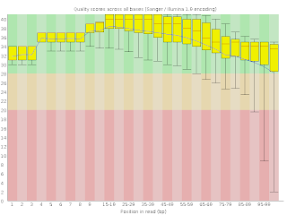

Here I am writing out some of the details of my tophat/cufflinks RNA-Seq workflow. I will try to concisely summarize what works and what pitfalls to avoid. None of what follows is particularly cutting edge, but since these analyses often involve days of computation, each and every trial-and-error glitch adds up and sets you back. This document is intended to help you avoid such setbacks.
I. Get reference genome and annotation
The first step is to obtain the necessary reference files: the reference genome sequence (FASTA file) and the transcriptome annotation (GFF or GTF file.) In the past, I have found these files from one of the main purveyors of public human genome data: NCBI, UCSC, and Ensembl. In principle, it should be possible to use the GFF (or GTF) files from any of these sources, but in practice, there are subtleties about the formatting of these “standard” files that can make them not play well with tophat/cufflinks (more on this in the next paragraph). So I have found it is better to use Illumina’s “iGenome” downloads, neatly indexed on the cufflinks site. Note that iGenome is not offering new annotations – they are just repackaging the annotations created by the big public projects in a standardized format. Also, you are getting not only the annotations, but also the genome sequence and even a pre-built bowtie2 index – which may save you a couple hours!
A note here about the annotation formats. GFF/GTF files are available from pretty much all the sources listed above, but the formats are loose, not well adhered to, and thus the annotations created by these institutions are not all interchangeable. The GFF2 format was defined by Sanger and is also embraced by UCSC. Two attempts to improve GFF2 include GTF (defined by the Brent Lab at WUSTL) and GFF3 (described by SequenceOntology). Of these two updates, GTF is the more incremental (the difference is summarized by UCSC here and has also been referred to as “GFF2.5”). GFF3 is more of a revamping (The SequenceOntology site states “The GFF format, although widely used, has fragmented into multiple incompatible dialects… The proposed GFF3 format addresses the most common extensions to GFF, while preserving backward compatibility with previous formats.“)
In principle, TopHat will accept GTF or GFF3 annotations. GTF seems to be somewhat more “native” to Tophat and iGenome uses GTF format, so this is a good thing.
NB: be prepared to wait a while on those iGenome downloads, they are big downloads. I recommend downloading them directly to your server with wget – just copy the link from the download page. For example:
II. Quality check and filter raw reads (rinse and repeat)
Recent software improvements to Illumina NGS platforms means that data quality control is much better than in the “early” days. But it is still necessary to check the quality of your incoming data, and (possibly) run a filter to remove low quality reads, low quality ends-of-reads, too short reads, and reads (or portions of reads) that have been “contaminated” by oligos used in the library prep. These contaminating reads might be due to primer-dimer, inserts shorter than the read-length, etc.
For QC, I typically use
FastQC in
command-line mode, very simply like this:
fastqc
-o fastqc_dir rawdata/Sample*fq.gz

This will generate a webpage with many useful plots, most important of
which is the overall mean quality per base position (shown at right).
It is normal for the quality to fall at the end, but be wary if there is
very much of the quality distribution down bellow 25-30.
{kind=link}
The other really useful piece of info returned by FastQC is a list of “overrepresented sequences.” Such sequences are automatically checked against the included contaminants_list.txt file – definitely have a look at this – library sequence artifact, if common, will sink your analysis.
For cleaning data, I typically use cutadapt (removes contaminating sequences) and the FASTX-Toolkit (trims and filters.)
You can (and should) take advantage of Linux’s ability to pipe commands together. Many commands are written to read from (and write to) STDOUT. You can read the links if you want to learn more, but in practice, this might look like this:
cutadapt -O 5 -b CAAGCAGAAGACGGCATACGAGCTCTTCCGATCT Sample01_1.fq.gz | fastx_quality_trimmer -Q33 -t 25 -l 50 | fastq_quality_filter -Q33 -q 25 -p 80 -z > Sample01_filtered_1.fq.gz
III. TopHat (map reads)
Now that you have the annotations, the reference genome sequence, and the bowtie2 index, and you have quality-filtered your data, you are ready to run TopHat. Here is your basic TopHat command:
tophat -G genes.gtf –transcriptome-index=transcriptome -o out -p 6 –no-novel-juncs genome file1_1.fq.gz file1_2.fq.gz
Where:
- genes.gtf is the GTF annotation (it can be found at Homo_sapiens/Ensembl/GRCh37/Annotation/Genes/genes.gtf in iGenomes)
- transcriptome is the base name of the bowtie2 index of the transcriptome. This file does not exist the first time you do an analysis – it is created by TopHat on the fly (takes about an hour) and subsequent runs will reuse this index and save time. If you have more than 1 file to process (and surely you do) you definitely want to use this option. You can put this file anywhere you want, but I usually tuck it in here: Homo_sapiens/Ensembl/GRCh37/Sequence/Bowtie2Index/transcriptome
- genome is the base name of the bowtie2 index of the genome (it can be found at Homo_sapiens/Ensembl/GRCh37/Sequence/Bowtie2Index/genome if you use the directory structure that comes from the iGenome download)
- Your output file is designated by “out“
- The number of process threads to use is set by -p. I recommend setting it to somewhat less than the number of threads available (on an 8 processor system, use 6 or 7. On a 32 processor system, I typically use 24-28, depending on what else is going on. In my experience, it is not better to use all of the processors – the jobs will actually run slower!)
One TopHat option you may want to consider is the –no-novel-juncs option. Detection of novel junctions (ie, genes that are not described in the provided annotations) is a fundamental part of how TopHat works. You can even run TopHat without any annotation at all! As I described in a previous posting, turning off novel-junction detection doesn’t really save you very much time – so why would you want to turn it off? Well, here is one possible reason. Say you have dozens or even hundreds of samples to process, with 100s of millions of reads for each sample. If novel junction discovery is used it will be performed for each sample independently. This creates a problem when it is time to compare samples – you have to use the cuffmerge utility to merge the annotations back together and re-compute the transcript quantitation estimates. In my experience, this can be very, very time and memory consuming. So, unless you really are looking for novel transcripts (maybe you are working with a poorly characterized tissue or a non-model organism), I suggesting turning this function off and just leaning on the annotations provided by Ensemble.
If you have many files to process, consider batch processing them with GNU parallel. I use parallel all the time, even when I am not parallelizing the task at hand. (Yes, I realize xargs would be a purer tool for such cases, but I like the bells and whistles that parallel comes with.) It’s just a handy way of processing many files in the same way. You will want to read the man page for parallel, the syntax has a learning curve, but it is a huge help once you get the hang of it!
Putting it all together: Your command might look something like this:
parallel -j 1 “tophat -G Homo_sapiens/Ensembl/GRCh37/Annotation/Genes/genes.gtf –no-novel-juncs –transcriptome-index=Homo_sapiens/Ensembl/GRCh37/Sequence/Bowtie2Index/transcriptome -p 6 -o {/} Homo_sapiens/Ensembl/GRCh37/Sequence/Bowtie2Index/genome {/}_1.fq.gz {/}_2.fq.gz” ::: `ls /path/to/data/sample_*_1.fq.gz | sed ’s/_1.fq.gz//’`
IV. Cufflink (or, alternatives)
The next step in the analysis pipeline is to take the BAM of aligned reads and estimate transcript abundances. Cufflinks is the “standard” (as if there was one) next step after TopHat. Cufflinks takes the alignment BAM files produced by TopHat and computes the transcript abundances – summarized both at the gene level and at the transcript (ie, alternative splicing isoform) level as “FPKM” - fragments per kilobase per million reads.
Cufflinks is probably the trickiest step in the analysis. A note about “no-effective-length-correction”: This Cufflinks feature has been discussed by many folks all over, most notably this discussion on SeqAnswers involving the author himself. Previously, I noted that turning off “effective length correction” reduces the variance in the transcript quantitation in a set of technical replicates. Also, in that same post, I note that using the “bias correction” option doesn’t seem to help much (and it takes a lot longer.) Note that “effective length correction” is something more than just lengh-correction. Everyone corrects for transcript length
A typical cufflinks command looks like this:
cufflinks -p 6 –no-effective-length-correction -G genes.gtf -o out out/accepted_hits.bam
The genes.gtf file is same one used for the TopHat command and the BAM
file you provide is the one that was made by the TopHat command. The
two key files produced by Cufflinks are:
genes.fpkm_tracking
isoforms.fpkm_tracking
These are basically long flat files, really mainly consisting of two key columns: the Gene ID and the FPKM. There are a lot of other columns providing info on the gene symbol, location, the confidence interval, etc.
V. Statistical testing
If all you want out of your RNASeq is a simple DE analysis, the
recommended next step is
Cuffdiff. If you
are coming to RNA-Seq from microarray analysis, like I was, you may be
tempted to use these FPKMs just like array spot intensities, and choose
Fisher’s exact test to see if two populations have a significantly
different level of gene expression. However, there are fundamental
statistical reasons why this is not okay. RNA-Seq gene abundance is
count data, and the distribution of count data is fundamentally
different from that of spot intensities. There is a lot written about
this on the internet: Simon Anders has been tirelessly preaching the
gospel – if you are new to this, you should definitely read these
posts:
Calculating p-values from
FPKM?
(particularly post
#6)
Biological replicates for
RNA-seq
Multiple DGE libraries comparison. (EdgeR baySeq
DESeq)
Differential gene expression: Can Cufflinks/Cuffcompare handle
biological
replicates?
RNA-seq output
DEG for paired samples, biological
replicates
VI. Alternatives to Cufflinks
You do have alternatives to Cufflinks and it’s smart to check them out. Options include HTSeq2 (with is an R/Bioconductor based update to the Python based HTSeq) and eXpress. Both of these will accept the BAM file produced by TopHat as input. In my hands, with the dataset of technical & biological replicates, I have found HTSeq2 produces estimates with slightly less variance than Cufflinks. I don’t have enough experience with eXpress but I will check it out and update this post asap.